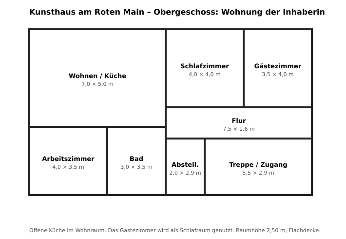

AB 1 – Der Auftrag: Brauchen wir das wirklich?
Situation: Frau Hofmann fragt: „Ich hab doch schon Rauchmelder aus dem Baumarkt – reicht das nicht?“ Du bereitest die Antwort für den Meister vor. Material: Leitsituation, IB 1 · Ziele: IA1, IA2, IA3, IIC2
Aufgabe 1 – Vergleichen (Planen · PA · 20 min) Pflicht
Ergänze die Tabelle mit IB 1.
| Merkmal | Rauchwarnmelder | Brandwarnanlage | Brandmeldeanlage |
|---|---|---|---|
| Norm(en) | |||
| Wo wird sie eingesetzt? | |||
| Wohin geht der Alarm? | |||
| Gibt es eine Zentrale? | |||
| Wer darf errichten? |
Kontrolle: Vergleicht eure Tabelle mit einem anderen Paar. Markiert Unterschiede mit „?“.
Aufgabe 2 – Wohnung im OG (Durchführen · EA · 15 min) Pflicht
- Zeichne in den Grundriss des OG alle Rauchwarnmelder ein, die nach BayBO Art. 46 Abs. 4 Pflicht sind. Kreuze sie mit ✕ an.

- Wie viele Rauchwarnmelder sind Pflicht? Begründe für jeden Raum in einem Satz.
| Raum | Pflicht? (ja/nein) | Begründung |
|---|---|---|
| Wohnen/Küche | ||
| Schlafzimmer | ||
| Gästezimmer | ||
| Arbeitszimmer | ||
| Bad | ||
| Flur | ||
| Anzahl Pflicht-RWM |
- Wer ist für die Betriebsbereitschaft verantwortlich?
Aufgabe 3 – Anforderungsliste (Schlussfolgern · EA · 10 min) Pflicht
Schreibe 5 Anforderungen an den Auftrag auf (Was? Wo? Nach welcher Norm?).
| Nr. | Anforderung |
|---|---|
| 1 | |
| 2 | |
| 3 | |
| 4 | |
| 5 |
Aufgabe 4 – Stellung nehmen (EA · 5 min) Pflicht
„Rauchmelder sind Geldmacherei.“ Nimm in 2–3 Sätzen Stellung. Nutze ein Argument aus IB 1.
Aufgabe 5 – Für Profis Erweiterung
Dein Betrieb ist nicht nach DIN 14675 zertifiziert. Darf er die BMA im Kunsthaus trotzdem errichten? Welche Möglichkeiten hat der Meister? Recherchiere kurz (DIN 14675, Phasen).
Für den Betrieb: Fotografiere bis zur nächsten Stunde einen Brand- oder Rauchmelder (Betrieb, Schule, Wohnung). Notiere, wo er hängt.